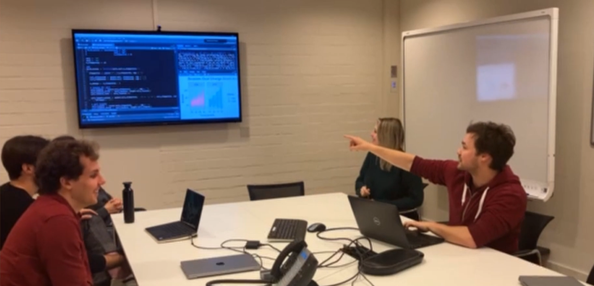
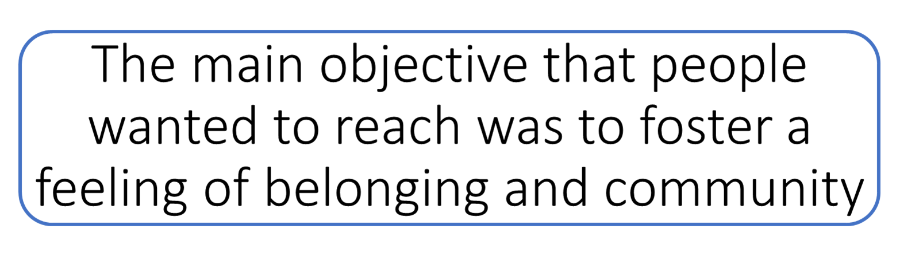
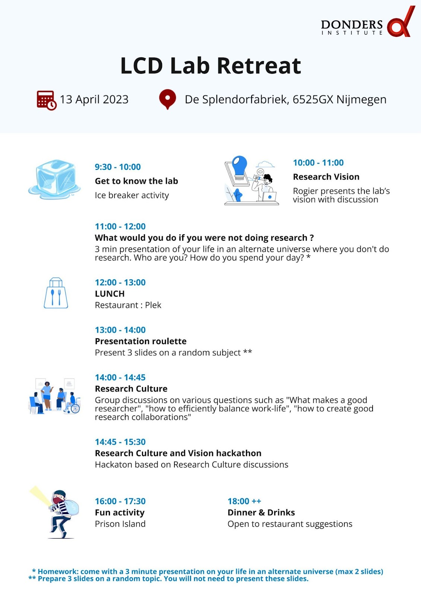
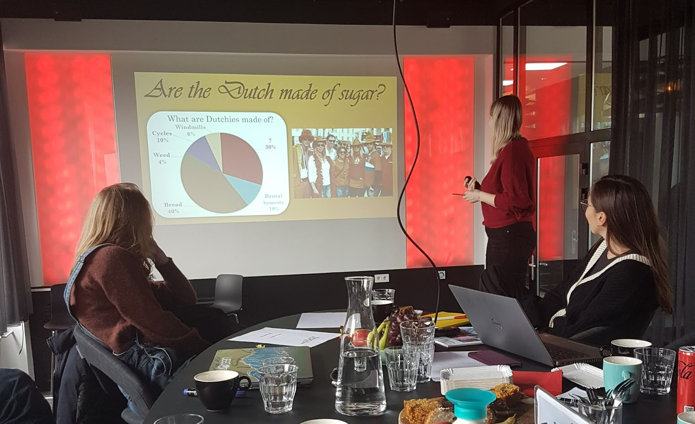
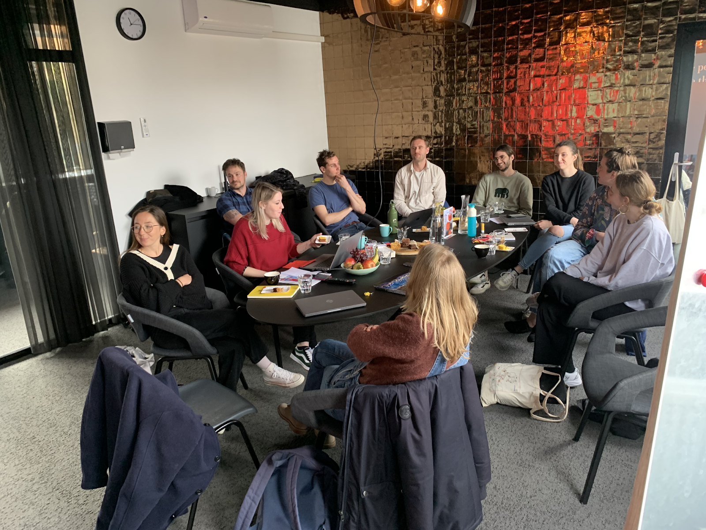
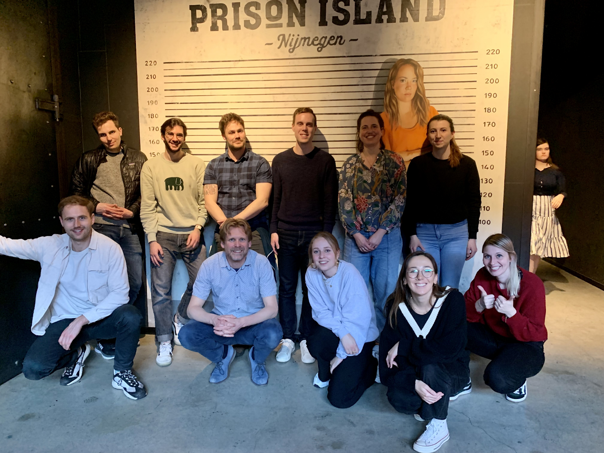

When you search for images of researchers on Google, you’re likely to find pictures of groups of people in white lab coats huddled together, deep in conversation about something science-related. But that’s not always the reality for researchers, at least not for us at the Lifespan Cognitive Dynamics lab. Most days, we’re sitting at our desks, clicking away on our computers. However, our recent lab retreat was a refreshing change of pace. For an entire day, we had the opportunity to brainstorm, learn, and collaborate in a way that’s not always possible day-to-day. It was a rare chance to break out of our individual silos and connect with each other in a meaningful way, and we can’t recommend it enough.
If you want to plan a lab retreat for your lab, we’re happy to walk you through what we did, what worked well and the impact that this day had on the future of the lab.

The first step in organizing a lab retreat is to determine the goals and objectives. What do you hope to achieve from the retreat?
A great way to start planning a lab retreat is to ask advice from colleagues with experience, as well as the colleagues that you are planning the lab retreat for. Our lab retreat team (Léa, Nick, & Ilse) was lucky to receive advice from Dr. Amy Orben who previously organized a lab away day at Cambridge University. Based on her proposed schedule, we created a Google form to receive input from our colleagues on what they were expecting or what they wanted to achieve with the lab retreat so that we could align everyone’s goals and hopes. We encouraged suggestions and were happy to receive some great ones, such as the presentation roulette.
We found that most people wanted to foster a feeling of belonging and community in the lab. To accomplish this we provide several smaller group discussions to made sure that everyone was heard, and had the opportunity to talk in both research-related conversations (i.e., Research Culture and Vision hackathon) and personal discussions and presentations (i.e., ice breaker activity and “what would you do if you were not doing research”).

Once you have a clear understanding of the goals and objectives, you can plan the retreat activities accordingly and create an agenda that outlines the activities, sessions and breaks. We felt that it was important to include brainstorming sessions on the lab environment, team building activities and social occasions, to keep it productive and fun. Keep in mind that the schedule needs to be flexible to allow for unforeseen changes or delays. We ended up moving around one activity to accommodate a delay from the start. The full schedule and activities will be detailed below.
Nitty-gritty details
After finalizing the basic structure of the program, the next important step was to ensure that the lab retreat is a hassle-free experience that allows space for fun and bonding.
Finding a date for 13 people, we selected a date for the retreat two months in advance to allow attendees to plan ahead, especially since some members had to arrange childcare.
Not too far, not too close
The location of the retreat also plays a crucial role in its success. After long discussions, we settled on the Splendor Fabriek, a building that offers workspace for such an event. It could host all of us, was accessible and had all the necessary facilities such as audio-visual equipment.
Full belly, happy researchers
Finally, ensure that all basic needs such as food, water, and accommodation are taken care of. We made sure to have coffee, cakes and fruits for the day in our workspace.
We also booked a lunch venue near the meeting location and dinner place in the city center, closer to the train station, to accommodate those who live outside of Nijmegen. Additionally, we made sure that the activity planned for the retreat was conveniently located and accessible to all participants. Living in the Netherlands we just made sure that everyone had a bike.

What did we do?

Get to know the lab
The main goal of the retreat was to create a feeling of community, ice breaking is always a go to activity to get to know people even if the members of your lab already know each other quite well. In our case, we had a bunch of new lab members along with some visitors. The ice breaking activity consisted of pairing people and giving them 3min to find the most random fact that they have in common. Among bunny killers and tennis fanatics we found out that two people illegally found themselves on a military base, a really random connection.
Then Rogier took the floor and presented the lab vision through its past, present and future. With the lab growing and the number of projects increasing it was a good opportunity to look back at the main questions defining the lab and what’s in store for the future.
Opportunity for everyone to shine With 12 people in the room, we emphasized on time for everyone to speak either through smaller group discussion or through individual presentation but we did not want to focus on work. To know more about our colleagues, we asked them “What would you do if you were not doing research?”. Presentation after presentation we learned about their passion for coffee, national parks and scuba diving. Also, I can now confidently say that this lab’s new purpose should be to build a cat cafe!
Next, the presentation roulette combines the fun of the surprise and a training experience at the same time. If you’re not familiar with the concept, during a presentation roulette (or presentation karaoke) everyone creates a random set of slides on a topic and one by one people will blindly pick one set and will have to present it as if it was a prepared presentation. Among knitting, building bridges and how to make the perfect tea, we also learned how the Dutch are made of sugar.

Improve the lab culture
Finally, we had group discussions on various questions reflecting on our lab and on academia. After each group shared the results of their discussion, we separated the lab in two groups to make them work on the solutions to these issues. The results of these discussions and how we implemented changes in our lab will be available in an upcoming blog post. How can lab meetings be more balanced in terms of who is speaking and who is silent? (~gender imbalance) How to combine family (doesn’t mean only children) and a high demanding job like research? What being a green researcher means and what could we do to improve your carbon footprint in the lab? How to create collaboration in and outside the lab? How to deal with imposter syndrome? What do you think scientific outreach should be like? What is the societal impact of the lab? What makes for a high-performing team?

Fun fun fun
Then it was finally time to go have some more fun outside the research world! We headed to Prison Island, an escape game composed of 32 cells with their own game and level of difficulty. In teams of 4, lab members had 1h30 to gain as many points as possible by solving all the cells.
Finally, we ended the day going to a nice restaurant where we ate delicious food and reminisced about our delightful day.
